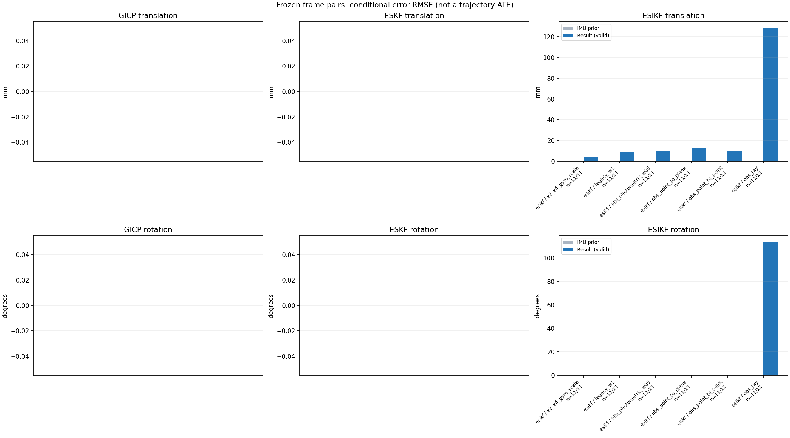

20261015_112757_right · depth=disparity_cache · cache=b969e2abaddc947f181c
模型视差：/home/ubuntu22/slam/SIO_SLAM/models/tensorrt/disp_896x448_fp16.plan；engine SHA256=604cf6ac1f705c877260711730dd5d2d58c2a21f3020c03c668401ef7fb1e768。输入为生产裁剪与光照处理后的 RGB 0..255；此实验使用原始浮点像素视差，不应用完整前端的邻域视差后处理。
原始 ONNX SHA256：e9f49736a65d68d06681add463866b6defdf78fdd7f4f50f6cc941b682fdc0bc。
代价体图改写验证：ONNX Runtime 固定随机特征输入，最大绝对误差 0；该项检查图改写，完整模型精度仍需由录制数据评估。
配准代码版本：744ac2d993ae629b0cc44a3b1d995e04ab4fad48；观测生成版本：744ac2d993ae629b0cc44a3b1d995e04ab4fad48。
固定图像对与纯 IMU 先验；ESKF 回放固定 GICP 观测，ESIKF 直接读取点云。真值只用于此报告。
同时查看 converged 与 solver_status：上游默认 Stereo 在 max_iter / stopped_at_minimum 时也可能置 converged=true。valid 表示输入检查通过，不表示精度提升。欧氏 GICP 未提供独立的点距 RMSE，该列显示 NaN。
误差按每对图像的锚点计算，单位 m / degrees。此处 RMSE 不是全序列 ATE；末帧受同一锚点条件约束。NIS 与条件马氏距离是诊断量，少量相关图像对不能用于宣称协方差已校准。
全部指标 CSV · R / P / K 矩阵 CSV · Stereo 求解逐轮 CSV · ESIKF 逐轮 CSV · 配置快照 · 矢量图
unflagged 排除纯惯性先验平移误差超过 50 mm 的图像对；whitened 为误差按协方差白化后的每自由度均值，协方差与实际误差相符时约为 1。
| stage | method | variant | valid | total | result_translation_rmse_m | result_rotation_rmse_deg | result_translation_median_m | result_rotation_median_deg | result_translation_rmse_unflagged_m | result_rotation_rmse_unflagged_deg | improved_translation | improved_rotation | posterior_whitened_by_P_rot_mean | posterior_whitened_by_P_trans_mean |
|---|---|---|---|---|---|---|---|---|---|---|---|---|---|---|
| esikf | esikf | e2_e4_gyro_scale | 11 | 11 | 0.0041032 | 0.06294 | 0.0008258 | 0.013018 | 0.0041032 | 0.06294 | 1 | 0 | 14.74 | 24.4 |
| esikf | esikf | legacy_w1 | 11 | 11 | 0.0088127 | 0.17552 | 0.0053064 | 0.0647 | 0.0088127 | 0.17552 | 0 | 0 | 67.477 | 84.843 |
| esikf | esikf | obs_photometric_w05 | 11 | 11 | 0.0099775 | 0.18663 | 0.006808 | 0.084161 | 0.0099775 | 0.18663 | 0 | 0 | 40.962 | 55.018 |
| esikf | esikf | obs_point_to_plane | 11 | 11 | 0.012307 | 0.37414 | 0.010212 | 0.39539 | 0.012307 | 0.37414 | 0 | 0 | 64.525 | 41.528 |
| esikf | esikf | obs_point_to_point | 11 | 11 | 0.0099585 | 0.1865 | 0.0068476 | 0.084004 | 0.0099585 | 0.1865 | 0 | 0 | 81.535 | 109.54 |
| esikf | esikf | obs_ray | 11 | 11 | 0.12804 | 113.27 | 0.10361 | 101 | 0.12804 | 113.27 | 0 | 0 | 102.9 | 74.048 |

| stage | case | method | variant | status | solver_status | inliers | converged | covariance_convention | covariance_from_hessian | fitness | registration_rmse_m | prior_trans_error_m | result_trans_error_m | prior_rot_error_deg | result_rot_error_deg | prior_flagged | R_rot_trace_rad2 | R_pos_trace_m2 | nis_regularized | posterior_whitened_by_P_rot | posterior_whitened_by_P_trans |
|---|---|---|---|---|---|---|---|---|---|---|---|---|---|---|---|---|---|---|---|---|---|
| esikf | static_a096 | esikf | obs_point_to_point | updated_not_converged | max_iterations | 15866 | 0 | 1 | 0 | 0 | 4.8512e-05 | 0.0089335 | 0.004426 | 0.068977 | 0 | 1.2574e-07 | 8.9766e-07 | nan | 74.899 | 97.116 | |
| esikf | static_a096 | esikf | obs_photometric_w05 | updated_not_converged | max_iterations | 15866 | 0 | 1 | 0 | 0 | 4.8512e-05 | 0.0089331 | 0.004426 | 0.068983 | 0 | 2.5148e-07 | 1.7957e-06 | nan | 37.384 | 48.521 | |
| esikf | static_a096 | esikf | obs_ray | updated_not_converged | correspondences_lost | 498 | 0 | 1 | 0 | 0 | 4.8512e-05 | 0.062085 | 0.004426 | 83.091 | 0 | 0.037361 | 0.00021073 | nan | 172.22 | 93.755 | |
| esikf | static_a096 | esikf | obs_point_to_plane | updated_not_converged | max_iterations | 15845 | 0 | 1 | 0 | 0 | 4.8512e-05 | 0.0061905 | 0.004426 | 0.2446 | 0 | 8.5833e-07 | 3.3653e-06 | nan | 32.876 | 8.2506 | |
| esikf | static_a096 | esikf | legacy_w1 | updated | converged | 15695 | 1 | 1 | 0 | 0 | 4.8512e-05 | 0.005254 | 0.004426 | 0.042687 | 0 | 1.2904e-07 | 9.5886e-07 | nan | 31.459 | 32.216 | |
| esikf | static_a096 | esikf | e2_e4_gyro_scale | updated | converged | 15678 | 1 | 1 | 0 | 0 | 4.8512e-05 | 0.00012166 | 0.004426 | 0.013018 | 0 | 1.2939e-07 | 9.6572e-07 | nan | 2.2225 | 0.45591 | |
| esikf | static_a100 | esikf | obs_point_to_point | updated_not_converged | max_iterations | 15859 | 0 | 1 | 0 | 0 | 6.0725e-05 | 0.0048366 | 0.0031365 | 0.064956 | 0 | 1.307e-07 | 9.3409e-07 | nan | 11.085 | 26.208 | |
| esikf | static_a100 | esikf | obs_photometric_w05 | updated_not_converged | max_iterations | 15853 | 0 | 1 | 0 | 0 | 6.0725e-05 | 0.0048493 | 0.0031365 | 0.065419 | 0 | 2.6171e-07 | 1.8724e-06 | nan | 5.642 | 13.125 | |
| esikf | static_a100 | esikf | obs_ray | updated_not_converged | correspondences_lost | 505 | 0 | 1 | 0 | 0 | 6.0725e-05 | 0.11569 | 0.0031365 | 91.332 | 0 | 0.10303 | 0.0012427 | nan | 211 | 7.8182 | |
| esikf | static_a100 | esikf | obs_point_to_plane | updated_not_converged | max_iterations | 15971 | 0 | 1 | 0 | 0 | 6.0725e-05 | 0.016123 | 0.0031365 | 0.39717 | 0 | 8.2738e-07 | 3.2e-06 | nan | 122.86 | 57.573 | |
| esikf | static_a100 | esikf | legacy_w1 | updated | converged | 15779 | 1 | 1 | 0 | 0 | 6.0725e-05 | 0.0024004 | 0.0031365 | 0.035149 | 0 | 1.3189e-07 | 9.5129e-07 | nan | 2.6064 | 6.545 | |
| esikf | static_a100 | esikf | e2_e4_gyro_scale | updated | converged | 15781 | 1 | 1 | 0 | 0 | 6.0725e-05 | 4.0249e-05 | 0.0031365 | 0.0072401 | 0 | 1.318e-07 | 9.4985e-07 | nan | 0.69804 | 0.038231 | |
| esikf | static_a104 | esikf | obs_point_to_point | updated_not_converged | max_iterations | 15787 | 0 | 1 | 0 | 0 | 6.8583e-05 | 0.0066218 | 0.0041787 | 0.063699 | 0 | 1.3187e-07 | 9.328e-07 | nan | 16.654 | 46.907 | |
| esikf | static_a104 | esikf | obs_photometric_w05 | updated_not_converged | max_iterations | 15787 | 0 | 1 | 0 | 0 | 6.8583e-05 | 0.0066279 | 0.0041787 | 0.063984 | 0 | 2.6372e-07 | 1.8664e-06 | nan | 8.6012 | 23.466 | |
| esikf | static_a104 | esikf | obs_ray | updated_not_converged | correspondences_lost | 144 | 0 | 1 | 0 | 0 | 6.8583e-05 | 0.1033 | 0.0041787 | 135.5 | 0 | 0.22608 | 0.0018676 | nan | 53.696 | 21.014 | |
| esikf | static_a104 | esikf | obs_point_to_plane | updated_not_converged | max_iterations | 15865 | 0 | 1 | 0 | 0 | 6.8583e-05 | 0.0058718 | 0.0041787 | 0.11136 | 0 | 8.49e-07 | 3.4289e-06 | nan | 4.416 | 14.284 | |
| esikf | static_a104 | esikf | legacy_w1 | updated | converged | 15783 | 1 | 1 | 0 | 0 | 6.8583e-05 | 0.0058223 | 0.0041787 | 0.060188 | 0 | 1.3207e-07 | 9.3689e-07 | nan | 12.497 | 36.349 | |
| esikf | static_a104 | esikf | e2_e4_gyro_scale | updated | converged | 15768 | 1 | 1 | 0 | 0 | 6.8583e-05 | 0.00033811 | 0.0041787 | 0.01245 | 0 | 1.3246e-07 | 9.4967e-07 | nan | 2.1145 | 1.9252 | |
| esikf | static_a108 | esikf | obs_point_to_point | updated_not_converged | max_iterations | 15926 | 0 | 1 | 0 | 0 | 8.4676e-05 | 0.0061856 | 0.0047785 | 0.12815 | 0 | 1.2627e-07 | 8.8661e-07 | nan | 38.309 | 47.538 | |
| esikf | static_a108 | esikf | obs_photometric_w05 | updated_not_converged | max_iterations | 15926 | 0 | 1 | 0 | 0 | 8.4676e-05 | 0.0062071 | 0.0047785 | 0.12842 | 0 | 2.5244e-07 | 1.7729e-06 | nan | 19.31 | 23.922 | |
| esikf | static_a108 | esikf | obs_ray | updated_not_converged | correspondences_lost | 43 | 0 | 1 | 0 | 0 | 8.4676e-05 | 0.16341 | 0.0047785 | 154.93 | 0 | 0.48731 | 0.012181 | nan | 57.015 | 22.409 | |
| esikf | static_a108 | esikf | obs_point_to_plane | updated_not_converged | max_iterations | 15889 | 0 | 1 | 0 | 0 | 8.4676e-05 | 0.014272 | 0.0047785 | 0.40287 | 0 | 8.7686e-07 | 3.3728e-06 | nan | 40.865 | 44.433 | |
| esikf | static_a108 | esikf | legacy_w1 | updated | converged | 15820 | 1 | 1 | 0 | 0 | 8.4676e-05 | 0.0017971 | 0.0047785 | 0.0647 | 0 | 1.28e-07 | 9.1137e-07 | nan | 7.5906 | 3.7141 | |
| esikf | static_a108 | esikf | e2_e4_gyro_scale | updated | converged | 15778 | 1 | 1 | 0 | 0 | 8.4676e-05 | 0.00019413 | 0.0047785 | 0.011305 | 0 | 1.2899e-07 | 9.3003e-07 | nan | 1.7937 | 0.61646 | |
| esikf | static_a112 | esikf | obs_point_to_point | updated_not_converged | max_iterations | 15938 | 0 | 1 | 0 | 0 | 9.6117e-05 | 0.013335 | 0.0015893 | 0.24234 | 0 | 1.3228e-07 | 9.444e-07 | nan | 120.21 | 213.68 | |
| esikf | static_a112 | esikf | obs_photometric_w05 | updated_not_converged | max_iterations | 15936 | 0 | 1 | 0 | 0 | 9.6117e-05 | 0.013327 | 0.0015893 | 0.24256 | 0 | 2.6461e-07 | 1.8909e-06 | nan | 60.065 | 106.58 | |
| esikf | static_a112 | esikf | obs_ray | updated_not_converged | correspondences_lost | 383 | 0 | 1 | 0 | 0 | 9.6117e-05 | 0.085723 | 0.0015893 | 101 | 0 | 0.12132 | 0.0024735 | nan | 108 | 24.682 | |
| esikf | static_a112 | esikf | obs_point_to_plane | updated_not_converged | max_iterations | 16272 | 0 | 1 | 0 | 0 | 9.6117e-05 | 0.0093014 | 0.0015893 | 0.47842 | 0 | 8.7621e-07 | 3.4482e-06 | nan | 83.941 | 23.057 | |
| esikf | static_a112 | esikf | legacy_w1 | updated | converged | 15903 | 1 | 1 | 0 | 0 | 9.6117e-05 | 0.01231 | 0.0015893 | 0.22849 | 0 | 1.3276e-07 | 9.5213e-07 | nan | 104.54 | 181.32 | |
| esikf | static_a112 | esikf | e2_e4_gyro_scale | updated | converged | 15702 | 1 | 1 | 0 | 0 | 9.6117e-05 | 0.00050989 | 0.0015893 | 0.0090325 | 0 | 1.3648e-07 | 1.01e-06 | nan | 2.0743 | 2.7586 | |
| esikf | static_a116 | esikf | obs_point_to_point | updated_not_converged | max_iterations | 15851 | 0 | 1 | 0 | 0 | 0.00012431 | 0.0068476 | 0.0048608 | 0.065457 | 0 | 1.2927e-07 | 9.2157e-07 | nan | 10.69 | 48.2 | |
| esikf | static_a116 | esikf | obs_photometric_w05 | updated_not_converged | max_iterations | 15848 | 0 | 1 | 0 | 0 | 0.00012431 | 0.006808 | 0.0048608 | 0.065388 | 0 | 2.5834e-07 | 1.8405e-06 | nan | 5.394 | 23.862 | |
| esikf | static_a116 | esikf | obs_ray | updated_not_converged | correspondences_lost | 23 | 0 | 1 | 0 | 0 | 0.00012431 | 0.19266 | 0.0048608 | 150.92 | 0 | 13.256 | 0.16442 | nan | 36.388 | 18.398 | |
| esikf | static_a116 | esikf | obs_point_to_plane | updated_not_converged | max_iterations | 16219 | 0 | 1 | 0 | 0 | 0.00012431 | 0.0089249 | 0.0048608 | 0.46946 | 0 | 7.9054e-07 | 3.1696e-06 | nan | 53.815 | 20.366 | |
| esikf | static_a116 | esikf | legacy_w1 | updated | converged | 15825 | 1 | 1 | 0 | 0 | 0.00012431 | 0.0059134 | 0.0048608 | 0.062347 | 0 | 1.2973e-07 | 9.2735e-07 | nan | 9.2524 | 35.893 | |
| esikf | static_a116 | esikf | e2_e4_gyro_scale | updated | converged | 15758 | 1 | 1 | 0 | 0 | 0.00012431 | 0.0011818 | 0.0048608 | 0.02146 | 0 | 1.318e-07 | 9.6028e-07 | nan | 8.5337 | 6.0569 | |
| esikf | static_a120 | esikf | obs_point_to_point | updated | converged | 15807 | 1 | 1 | 0 | 0 | 0.00014204 | 0.0017445 | 0.0013784 | 0.02363 | 0 | 1.3324e-07 | 9.5895e-07 | nan | 2.5279 | 3.377 | |
| esikf | static_a120 | esikf | obs_photometric_w05 | updated | converged | 15807 | 1 | 1 | 0 | 0 | 0.00014204 | 0.0017442 | 0.0013784 | 0.023482 | 0 | 2.6635e-07 | 1.9169e-06 | nan | 1.2738 | 1.689 | |
| esikf | static_a120 | esikf | obs_ray | updated_not_converged | correspondences_lost | 346 | 0 | 1 | 0 | 0 | 0.00014204 | 0.068732 | 0.0013784 | 90.041 | 0 | 0.10379 | 0.00063416 | nan | 82.505 | 29.038 | |
| esikf | static_a120 | esikf | obs_point_to_plane | updated_not_converged | max_iterations | 16105 | 0 | 1 | 0 | 0 | 0.00014204 | 0.012113 | 0.0013784 | 0.53918 | 0 | 7.8315e-07 | 3.327e-06 | nan | 176.91 | 41.237 | |
| esikf | static_a120 | esikf | legacy_w1 | updated | converged | 15805 | 1 | 1 | 0 | 0 | 0.00014204 | 0.0015738 | 0.0013784 | 0.020669 | 0 | 1.3349e-07 | 9.6188e-07 | nan | 2.6156 | 2.7268 | |
| esikf | static_a120 | esikf | e2_e4_gyro_scale | updated | converged | 15802 | 1 | 1 | 0 | 0 | 0.00014204 | 0.0008258 | 0.0013784 | 0.0096638 | 0 | 1.3371e-07 | 9.6478e-07 | nan | 3.0798 | 3.0717 | |
| esikf | static_a124 | esikf | obs_point_to_point | updated_not_converged | max_iterations | 16099 | 0 | 1 | 0 | 0 | 0.00016684 | 0.010968 | 0.0029958 | 0.19209 | 0 | 1.2765e-07 | 8.8601e-07 | nan | 68.212 | 112.63 | |
| esikf | static_a124 | esikf | obs_photometric_w05 | updated_not_converged | max_iterations | 16101 | 0 | 1 | 0 | 0 | 0.00016684 | 0.010965 | 0.0029958 | 0.19196 | 0 | 2.5504e-07 | 1.7693e-06 | nan | 34.106 | 56.388 | |
| esikf | static_a124 | esikf | obs_ray | updated_not_converged | correspondences_lost | 337 | 0 | 1 | 0 | 0 | 0.00016684 | 0.21469 | 0.0029958 | 100.83 | 0 | 0.034326 | 0.00088772 | nan | 81.093 | 488.03 | |
| esikf | static_a124 | esikf | obs_point_to_plane | updated_not_converged | max_iterations | 16246 | 0 | 1 | 0 | 0 | 0.00016684 | 0.01587 | 0.0029958 | 0.28957 | 0 | 7.5853e-07 | 3.0582e-06 | nan | 37.44 | 84.119 | |
| esikf | static_a124 | esikf | legacy_w1 | updated | converged | 16033 | 1 | 1 | 0 | 0 | 0.00016684 | 0.0088502 | 0.0029958 | 0.1549 | 0 | 1.2864e-07 | 8.987e-07 | nan | 45.925 | 72.834 | |
| esikf | static_a124 | esikf | e2_e4_gyro_scale | updated | converged | 15967 | 1 | 1 | 0 | 0 | 0.00016684 | 0.0024512 | 0.0029958 | 0.020603 | 0 | 1.3092e-07 | 9.2966e-07 | nan | 10.378 | 17.769 | |
| esikf | static_g128 | esikf | obs_point_to_point | updated_not_converged | max_iterations | 16052 | 0 | 1 | 0 | 0 | 0.00097101 | 0.021465 | 0.010623 | 0.48608 | 0 | 1.2432e-07 | 8.3716e-07 | nan | 491.33 | 504.69 | |
| esikf | static_g128 | esikf | obs_photometric_w05 | updated_not_converged | max_iterations | 16053 | 0 | 1 | 0 | 0 | 0.00097101 | 0.02157 | 0.010623 | 0.48647 | 0 | 2.4863e-07 | 1.6755e-06 | nan | 247.21 | 255.3 | |
| esikf | static_g128 | esikf | obs_ray | updated_not_converged | correspondences_lost | 425 | 0 | 1 | 0 | 0 | 0.00097101 | 0.10361 | 0.010623 | 111.27 | 0 | 0.035256 | 0.00055716 | nan | 244.45 | 69.785 | |
| esikf | static_g128 | esikf | obs_point_to_plane | updated_not_converged | max_iterations | 16125 | 0 | 1 | 0 | 0 | 0.00097101 | 0.020264 | 0.010623 | 0.39539 | 0 | 7.4074e-07 | 2.9881e-06 | nan | 61.942 | 129.22 | |
| esikf | static_g128 | esikf | legacy_w1 | updated_not_converged | max_iterations | 16053 | 0 | 1 | 0 | 0 | 0.00097101 | 0.021466 | 0.010623 | 0.48586 | 0 | 1.2428e-07 | 8.3648e-07 | nan | 491.73 | 505.54 | |
| esikf | static_g128 | esikf | e2_e4_gyro_scale | updated_not_converged | max_iterations | 15820 | 0 | 1 | 0 | 0 | 0.00097101 | 0.010251 | 0.010623 | 0.18775 | 0 | 1.2883e-07 | 9.0011e-07 | nan | 90.681 | 142.27 | |
| esikf | static_g136 | esikf | obs_point_to_point | updated_not_converged | max_iterations | 15773 | 0 | 1 | 0 | 0 | 0.0012761 | 0.0073284 | 0.0055921 | 0.084004 | 0 | 1.3141e-07 | 9.1009e-07 | nan | 45.33 | 58.101 | |
| esikf | static_g136 | esikf | obs_photometric_w05 | updated_not_converged | max_iterations | 15773 | 0 | 1 | 0 | 0 | 0.0012761 | 0.0073407 | 0.0055921 | 0.084161 | 0 | 2.6264e-07 | 1.8184e-06 | nan | 22.834 | 29.167 | |
| esikf | static_g136 | esikf | obs_ray | updated_not_converged | correspondences_lost | 74 | 0 | 1 | 0 | 0 | 0.0012761 | 0.12244 | 0.0055921 | 108.28 | 0 | 0.48581 | 0.0097224 | nan | 41.052 | 20.142 | |
| esikf | static_g136 | esikf | obs_point_to_plane | updated_not_converged | max_iterations | 15787 | 0 | 1 | 0 | 0 | 0.0012761 | 0.0070783 | 0.0055921 | 0.29137 | 0 | 9.2659e-07 | 3.4569e-06 | nan | 73.729 | 11.538 | |
| esikf | static_g136 | esikf | legacy_w1 | updated | converged | 15676 | 1 | 1 | 0 | 0 | 0.0012761 | 0.0053064 | 0.0055921 | 0.066568 | 0 | 1.3303e-07 | 9.2327e-07 | nan | 21.16 | 28.238 | |
| esikf | static_g136 | esikf | e2_e4_gyro_scale | updated_not_converged | max_iterations | 15683 | 0 | 1 | 0 | 0 | 0.0012761 | 0.0071913 | 0.0055921 | 0.057436 | 0 | 1.3287e-07 | 9.1983e-07 | nan | 33.401 | 70.684 | |
| esikf | static_g144 | esikf | obs_point_to_point | updated_not_converged | max_iterations | 15887 | 0 | 1 | 0 | 0 | 0.0013616 | 0.006562 | 0.0073157 | 0.096694 | 0 | 1.312e-07 | 8.8843e-07 | nan | 17.646 | 46.466 | |
| esikf | static_g144 | esikf | obs_photometric_w05 | updated_not_converged | max_iterations | 15886 | 0 | 1 | 0 | 0 | 0.0013616 | 0.0065514 | 0.0073157 | 0.096324 | 0 | 2.6235e-07 | 1.7764e-06 | nan | 8.7613 | 23.185 | |
| esikf | static_g144 | esikf | obs_ray | updated_not_converged | correspondences_lost | 100 | 0 | 1 | 0 | 0 | 0.0013616 | 0.06865 | 0.0073157 | 90.403 | 0 | 0.34886 | 0.0041132 | nan | 44.507 | 19.45 | |
| esikf | static_g144 | esikf | obs_point_to_plane | updated_not_converged | max_iterations | 15865 | 0 | 1 | 0 | 0 | 0.0013616 | 0.010212 | 0.0073157 | 0.28706 | 0 | 8.0425e-07 | 3.3706e-06 | nan | 20.976 | 22.727 | |
| esikf | static_g144 | esikf | legacy_w1 | updated | converged | 15780 | 1 | 1 | 0 | 0 | 0.0013616 | 0.0052495 | 0.0073157 | 0.083723 | 0 | 1.341e-07 | 9.3151e-07 | nan | 12.866 | 27.894 | |
| esikf | static_g144 | esikf | e2_e4_gyro_scale | updated_not_converged | max_iterations | 15788 | 0 | 1 | 0 | 0 | 0.0013616 | 0.0044587 | 0.0073157 | 0.058857 | 0 | 1.3418e-07 | 9.3407e-07 | nan | 7.1649 | 22.755 |